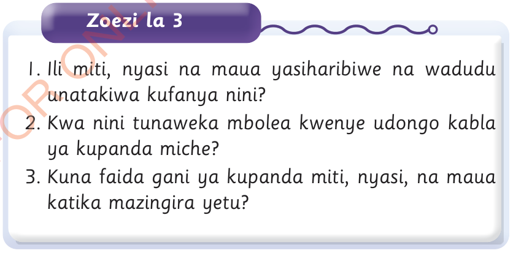

Zoezi la 3
1. Ili miti, nyasi na maua yasiharibiwe na wadudu unatakiwa kufanya nini?
2. Kwa nini tunaweka mbolea kwenye udongo kabla ya kupanda miche?
3. Kuna faida gani ya kupanda miti, nyasi, na maua katika mazingira yetu?

1. Ili miti, nyasi na maua yasiharibiwe na wadudu unatakiwa kufanya nini?
2. Kwa nini tunaweka mbolea kwenye udongo kabla ya kupanda miche?
3. Kuna faida gani ya kupanda miti, nyasi, na maua katika mazingira yetu?